Software Engineer
Software Engineer at Meta. PhD in Computer Science and Engineering from Penn State. Research in computational geometry, meshing, and high-performance scientific computing.
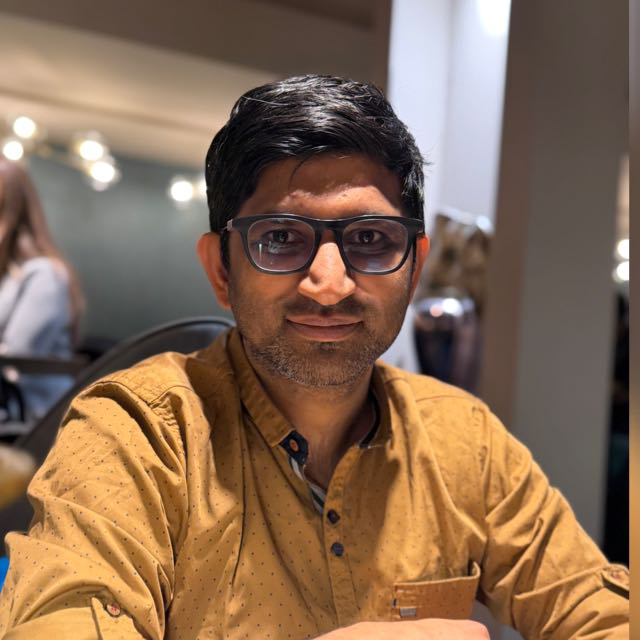
Research
Simulation science is usually driven by the solution to partial differential equations (PDEs) using the finite element (FE) method. A computational pipeline that facilitates computer-aided engineering (CAE) typically involves the following stages: geometric modeling, mesh generation, numerical simulation, error analysis, mesh adaptation, and visualization. My research has focused on numeric and geometric aspects of scientific and high performance computing in most of the stages of the pipeline. I have also used my knowledge in these areas to develop a machine learning algorithm for regression and classification.
I present a regression algorithm that provides a continuous, piecewise-smooth function approximating scattered data.
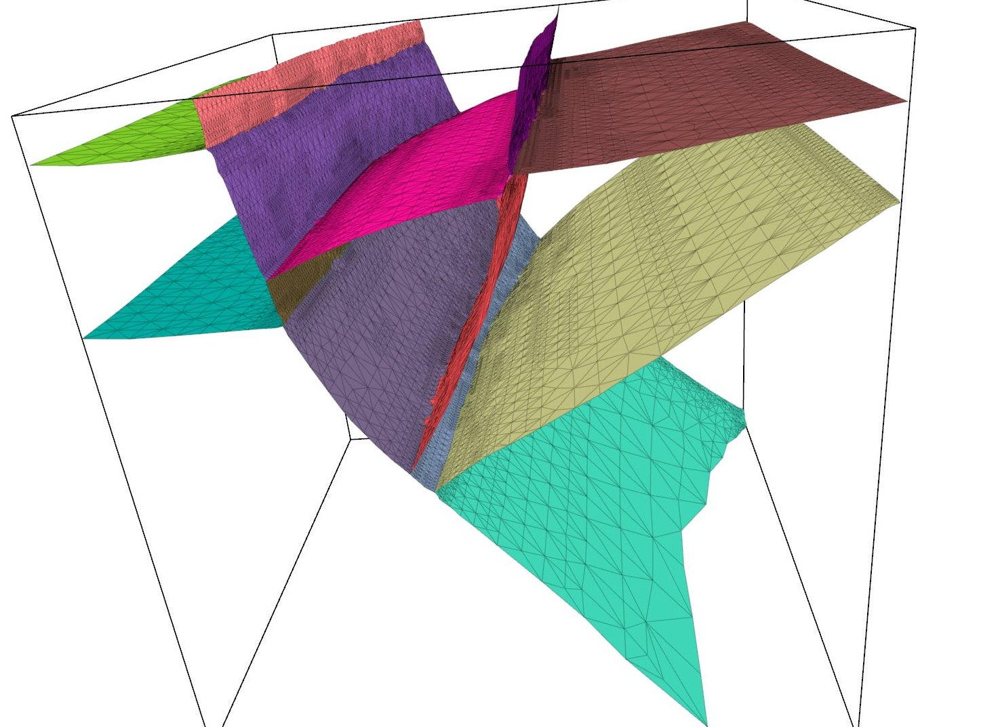
The geometric modeling of geological structures finds applications in oil exploration.
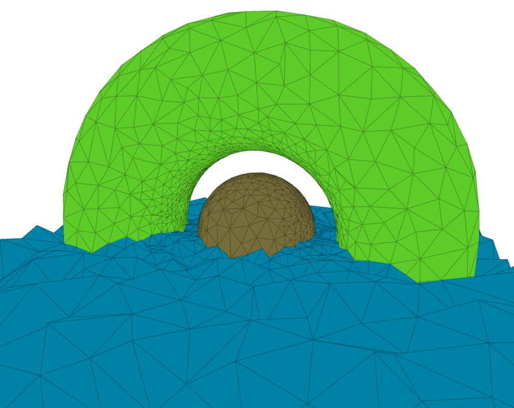
Patient-specific treatment is possible through processing of magnetic resonance (MR) or computed tomography (CT) images to obtain volumetric data containing the geometry of internal organs.
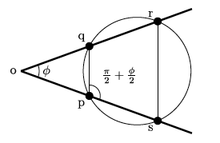
Delaunay triangulation and refinement is a theoretically guaranteed technique of generating high-quality meshes.
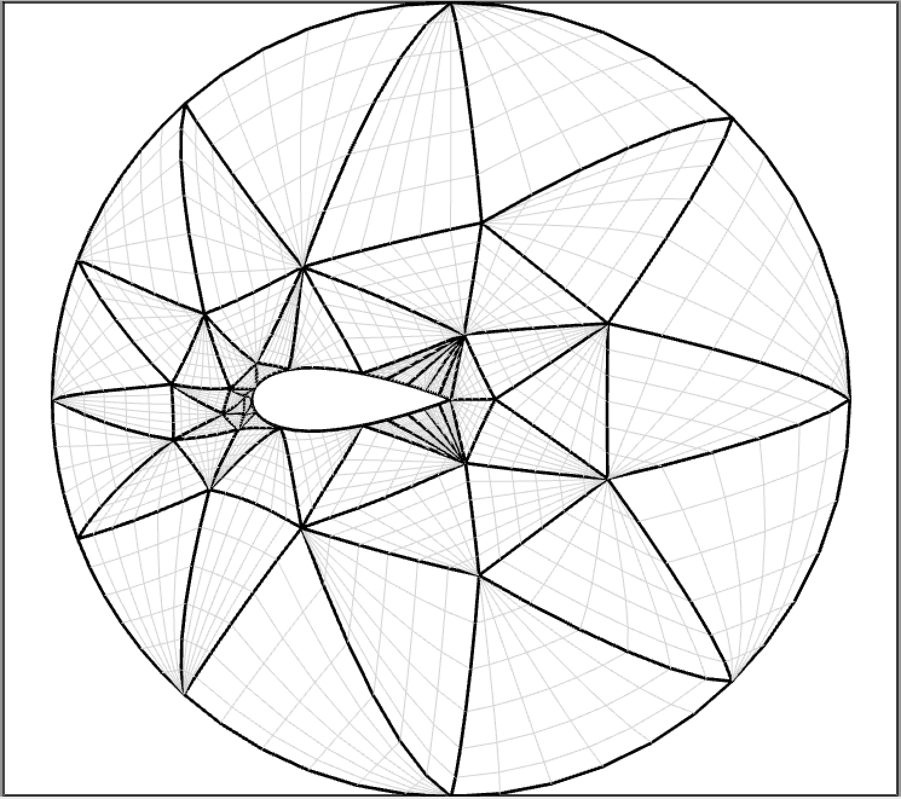
Curvilinear meshes are obtained by first generating straight-sided meshes and mapping the boundary vertices to their respective locations on the curved boundaries.
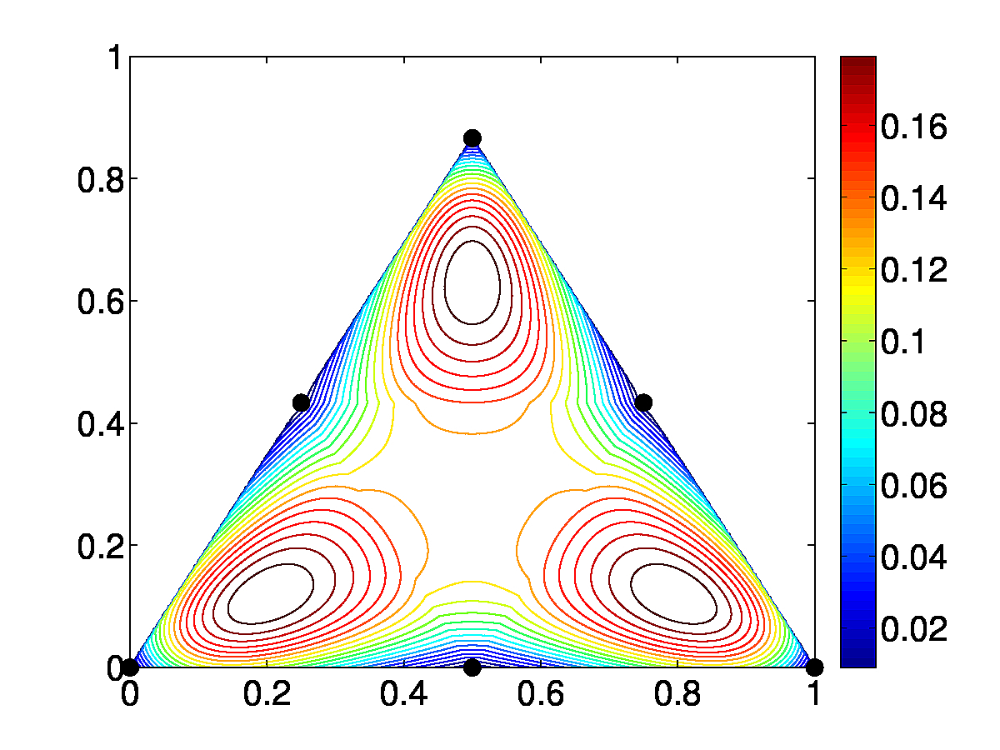
The analysis of error in an FE simulation is an important step in validation and adaptation of our numerical experiments.
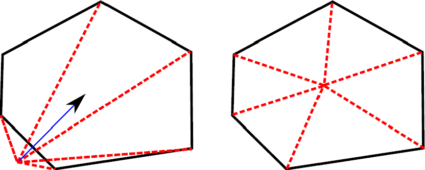
The presence of even a few poor-quality mesh elements can negatively affect the stability, accuracy, and efficiency of an FE solver.
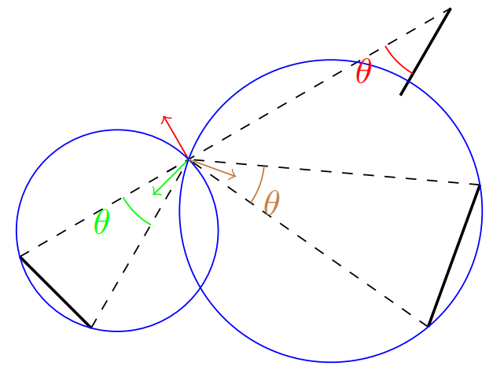
In order to improve the quality of mesh elements, we move vertices in the mesh one by one such that the quality of the elements improves in the local vicinity.
We characterized some optimization techniques by analyzing their performance in several contexts such as inaccurate and accurate smoothing requirements and smoothing of graded, randomly-perturbed, and vertex-translated meshes.
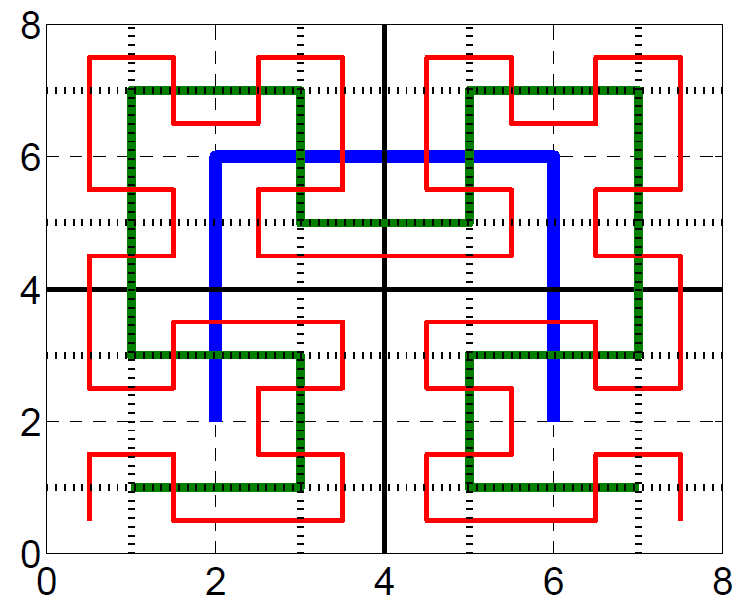
We worked on mesh element and vertex reordering techniques to improve the spatial locality of memory access patterns to improve cache utility in an implementation of a parallel algorithm that solves Laplace's equations in order to warp a mesh.
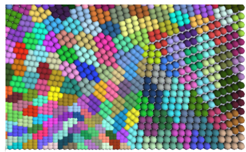
Algebraic multigrid (AMG) preconditioners are used in solving sparse linear systems arising from finite element meshes.
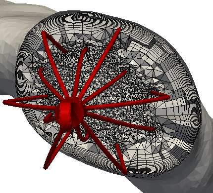
We developed a patient-specific mesh generation technique with application to inferior vena cava (IVC) computational fluid dynamics (CFD) blood flow simulations.
Full publication list with citation counts available on:
About Me
From IIT Madras to Meta
Privacy infrastructure.
AI and machine learning platform for enterprises.
Technology and manufacturing group at Hillsboro, OR.
Worked on generating hexahedral meshes for thermomechanical simulations.
Scientific Computing and Imaging (SCI) Institute.
Supervised by Prof. Ross T. Whitaker and Prof. Robert M. Kirby. Worked on mesh generation and interpolation error analysis in high-order finite elements. Collaborated with ExxonMobil Upstream Research Company on geometric modeling of geological structures.
Department of Computer Science and Engineering.
Advisor: Prof. Suzanne M. Shontz. Research focused on dynamic meshing techniques with application to simulation of blood flow after vein occlusion by mechanical filters for capturing blood clots. Collaborated with Penn State Hershey Medical Center. Also worked on numerical optimization techniques for mesh quality improvement.
Indian Institute of Technology Madras, Chennai, India.